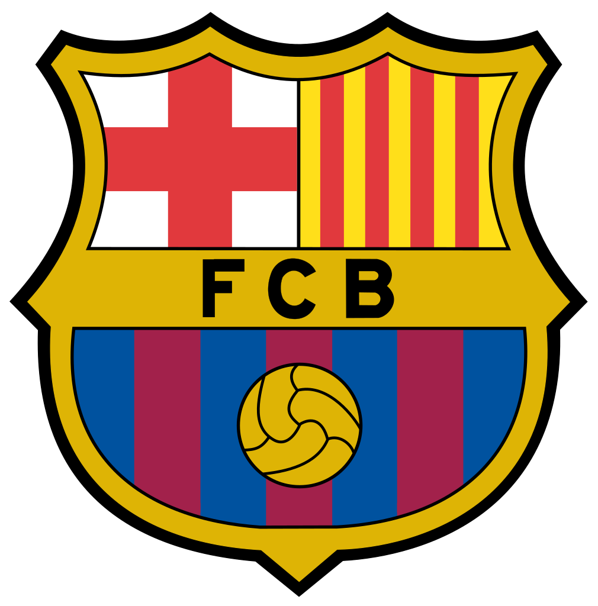
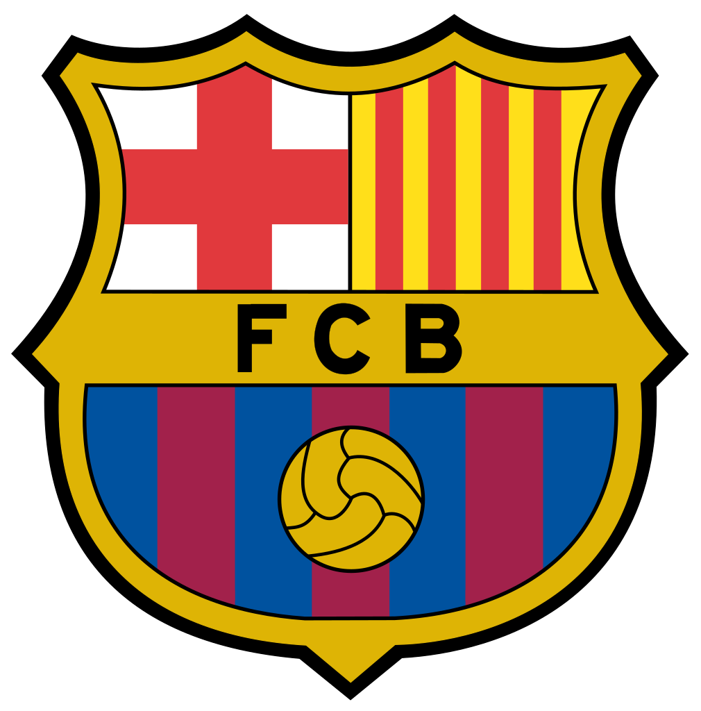

A Liga dos Campeões da UEFA (em inglês: UEFA Champions League) é uma competição anual de futebol a
nível continental, organizada pela União das Associações Europeias de Futebol (UEFA) e disputada por
clubes da Europa. É um dos torneios mais prestigiados do mundo e a competição de clubes mais
prestigiada do futebol europeu, disputada pelas equipes mais bem classificadas nas respectivas ligas
nacionais da temporada anterior. A final da competição é o evento esportivo anual mais visto em todo
o mundo, atraindo cerca de 200 milhões de telespectadores.
Site oficial: https://www.uefa.com/uefachampionsleague/
Região: Europa
Data de fundação: 1955; há 68 anos
Formato: Grupos e eliminatórias
Times participantes: 32 (fase de grupos)
Atual Campeão: Manchester City (ING) - 1º Título
 

Real Madrid (ESP) - 14 títulos
Milan (ITA) - 7 títulos
Bayern de Munique (ALE) - 6 títulos
Liverpool (ING) - 6 títulos
Barcelona (ESP) - 5 títulos